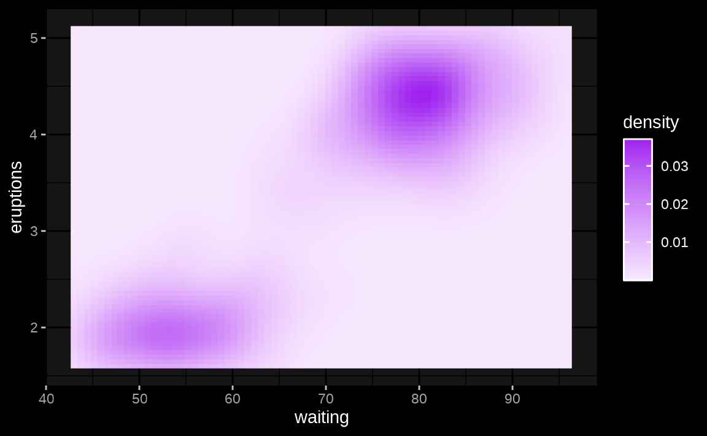

The most magical aspect of thematic is its auto theming capabilities, which gives R plots to ability to style themselves in Shiny (via CSS), R Markdown (via bootstraplib), and RStudio (via RStudio themes). To gain a sense for how auto theming works, it’s recommended you read through the next section, which walks through several variants on a basic Shiny app, and demonstrates how auto theming allows the R plots to be reactive to the changes in CSS styling. Also, as discussed in other scenarios, it possible to configure the information thematic uses for auto theming, but you can also opt-out of auto theming by providing desired colors and fonts to thematic (as discussed on custom themes).
Shiny
One frustrating thing about styling Shiny apps is that R plots know nothing about CSS. That means, if you write custom CSS to style the app, you’ll likely also want to translate those same styles to the R graphics. You may have never noticed this problem before if you just use the default styles in both systems because they’re quite similar. Here’s the default styles in a Shiny app with a few R plots inside a tabsetPanel():
library(shiny) library(ggplot2) tabs <- tabsetPanel(type = "pills", tabPanel("ggplot", plotOutput("ggplot")), tabPanel("lattice", plotOutput("lattice")), tabPanel("base", plotOutput("base")) ) ui <- fluidPage(tabs) server <- function(input, output) { output$ggplot <- renderPlot({ ggplot(mtcars, aes(wt, mpg, label = rownames(mtcars), color = factor(cyl))) + geom_point() + ggrepel::geom_text_repel() }) output$lattice <- renderPlot({ lattice::show.settings() }) output$base <- renderPlot({ image(volcano, col = thematic_get_option("sequential")) }) } shinyApp(ui, server)

By bringing in a new set of CSS rules, say the darkly shinytheme, the difference in CSS vs R styles becomes much more apparent:

By activating thematic auto coloring (as shown below), R plot(s) generated by the Shiny app gain new color defaults based on the surrounding CSS styles. This works because, at plot time, thematic grabs CSS styles from the plot(s) HTML container (via shiny::getCurrentOutputInfo())1 and uses that info to set new R styling defaults.
thematic::thematic_shiny() shinyApp(ui, server)

From the ggplot2 example above, we can see thematic_on() has done the following for us:
- Set new
ggplot2::theme()-ing defaults based on the background and foreground colors (as well as appropriate mixtures of these colors for the panel background). - Set a new color-blind safe default for
scale_color_discrete()(andscale_fill_discrete()).
Now, if we change our tabsetPanel() from type="pills" to type="tabs" and look at a couple other ggplot2 examples, we can see that thematic_on() does a few more things:
- Sets new
geom_*()defaults using the new foreground (in this case,geom_point()’scolor) and accent color (in this case,geom_smooth()’s color).- The accent color comes from the hyperlink color of the plot’s HTML container. It just so happens that this darkly theme colors
type="tabs"the same as hyperlinks, buttype="pills"is colored differently.
- The accent color comes from the hyperlink color of the plot’s HTML container. It just so happens that this darkly theme colors

Also:
- Uses the background, foreground, and accent colors to construct a new default for
scale_fill_continuous()(andscale_color_continuous()).

Keep in mind that thematic works by changing global defaults, so you can always customize with plot-specific code (e.g., by adding theme() to a plot object p). That said, to use thematic with a different complete ggplot2 theme (e.g., theme_minimal(), theme_bw(), etc), you should do so by setting that theme globally.
theme_set(theme_minimal()) shinyApp(ui, server)

Since thematic knows the CSS rules on the plot’s HTML container, auto theming works regardless of how the HTML is actually styled. That said, consider using the new bootstraplib package to theme your Shiny apps (and R Markdown docs). It provides a rich set of tools for influencing Bootstrap CSS from R, including convenience functions for setting the main colors (and fonts):
library(bootstraplib) bs_theme_new() bs_theme_base_colors(bg = "#002B36", fg = "#EEE8D5") bs_theme_accent_colors(primary = "#2AA198") bs_theme_fonts("Pacifico")
In this case, we’ve set the font family for this bootstraplib theme to be Pacifico, which is a Google Font. Therefore, in order for the browser to be able to render this font, we need to import it. For simplicity, this code imports the font via a remote URL, but it’s recommended to use local font files (for hosting reasons). The gfonts package makes it really easy to download and use Google Fonts locally in Shiny and R Markdown.
ui <- fluidPage( tabs, bootstrap(), tags$link(href="https://fonts.googleapis.com/css?family=Pacifico", rel="stylesheet") ) shinyApp(ui, server)

As shown in the image above, text rendered by the browser (i.e., tabsetPanel()’s titles) now uses the Pacifico font, but the R plots are still using the default font because, by default, thematic_shiny() only enables automatic colors. To enable auto fonts, set font = "auto"; and when doing so, make sure the font to be rendered is either a font already supported by R, or is Google Font and the showtext package is installed (learn more in the fonts article).
library(showtext) thematic_shiny(font = "auto") shinyApp(ui, server)


thematic also works great with bootstraplib’s realtime theming widget. This interactive widget influences the CSS on the page, so as long as thematic’s auto theming enabled, those CSS changes automatically influence the R plot styling. Note how here we still have both auto fonts and colors, which means that as long as we choose Google Fonts (and/or fonts already known to R), the R plots can automatically render them.
# The theming widget could also be added to our mini example with bs_themer(), # but this demo app demonstrates a wider range of examples bs_theme_preview()
R Markdown
Auto theming can also work with rmarkdown::html_document(). The main catch is that, if R plots are not generated via Shiny, then any custom styling must be done via the bootstraplib package in order for thematic to know about it. In the example below, we set a custom background, foreground, and accent color via bootstraplib; then use thematic_rmd() to apply automatic coloring to every R plot generated in the R Markdown document.

Auto theming doesn’t necessarily work for non-HTML output formats. In that case, provide the document’s colors and fonts either directly to thematic_rmd() or to auto_config(). To learn more about various options for

RStudio
Here’s a ggplot2 plot inside the RStudio IDE before thematic is enabled. Note the colors in the IDE are based on the Tomorrow Night 80s RStudio Theme and the editor’s font is FiraCode.

After calling thematic_on(font = "Fira Sans Condensed") to enable automatic colors and request the Fira Sans Condensed Google Font, the colors in the Plots viewer pane now match the RStudio theme2, and the fonts nicely complement the editor’s font.

By the way, rendering of Google Fonts in RStudio requires a special setup that’s discussed in the fonts article.
Other scenarios
As the R Markdown section already eluded to (in reference to non-HTML output formats), thematic’s auto theming won’t know what styles to use in every scenario. In these scenarios, you have the following options:
- Avoid
'auto'values entirely by providing the desired colors and fonts directly tothematic_on(). The next article, Custom Themes, discusses this option in depth. - Allow auto theming to “fail”, meaning that thematic effectively has no effect on the visual output.
- Use
auto_config()andauto_config_set()to set “fallbacks” for'auto'values. For example:
config <- auto_config(bg = "black", fg = "white", accent = "purple") auto_config_set(config) thematic_on() ggplot(faithfuld, aes(waiting, eruptions)) + geom_raster(aes(fill = density))

The main use case for auto_config() is for developers of a custom rmarkdown output document that wish to provide an auto theming experience for users of the document (see auto_config() for more details). However, there may also be scenarios where more control over the set and priority of information that auto_resolve_theme() uses to resolve 'auto' values. This can be done via the priority argument of auto_config(). The default priority is:
-
shiny::getCurrentOutputInfo()("shiny") -
auto_config_get()("config") -
bootstraplib::bs_theme_get_variables()("bootstraplib") -
rstudioapi::getThemeInfo()("rstudio")
If you’re a shiny developer and wish to add similar auto theming capabilities to a custom output, you can add a
.shiny-report-themeclass to the output container to obtain styles viagetCurrentOutputInfo(). And similarly, if you’re an htmlwidgets developer, you can just setreportTheme = TRUEinhtmlwidgets::shinyWidgetOutput().↩︎Auto detection of background and foreground should always work in RStudio, but
accent='auto'is currently limited to non-custom RStudio themes. Moreover,font='auto'is fully supported on RStudio Server Pro (1.4 or higher), but may not work on RStudio Desktop.↩︎